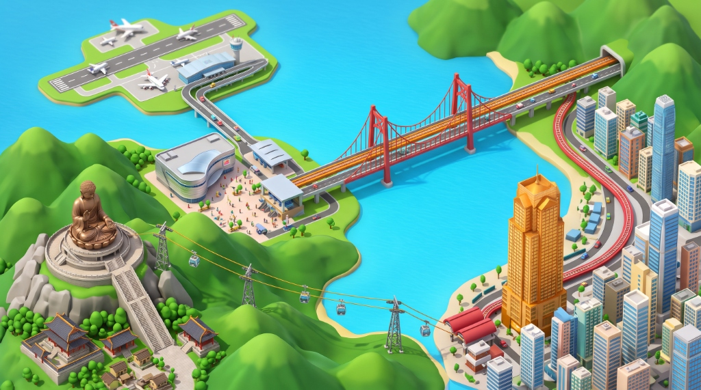

🚇 แผนที่ & การเดินทางฮ่องกง
🛬 เที่ยวบินขาเข้า: Emirates EK 384 (BKK ➔ HKG T1)
1 ม.ค. 2027
• เวลาลงจอด: 17:40 น. อาคารผู้โดยสาร Terminal 1 (สัมภาระโหลดใต้ท้องเครื่อง 30 กก.)
• เวลาคาดการณ์: รับกระเป๋า ~18:30–18:45 น. ➔ เดินทางถึง รร. B P ~19:15–19:30 น. ทันออกไปหาของกินมื้อค่ำย่าน Jordan & จิมซาจุ่ย สบายๆ!
• เวลาคาดการณ์: รับกระเป๋า ~18:30–18:45 น. ➔ เดินทางถึง รร. B P ~19:15–19:30 น. ทันออกไปหาของกินมื้อค่ำย่าน Jordan & จิมซาจุ่ย สบายๆ!
1
ออกจากโถง Arrivals Hall & รับสัมภาระ
โถงผู้โดยสารขาเข้า Hall A หรือ B • สัมภาระโหลด 30 กก.
• รับกระเป๋าเดินทางที่สายพาน (~18:30–18:45 น.) ตรวจเช็คกระเป๋าและพาสปอร์ตให้เรียบร้อย
• แวะเคาน์เตอร์ MTR Customer Service ตรงกลางโถงผู้โดยสาร เพื่อซื้อบัตร Octopus หรือเปิด Mobile Octopus บน iPhone
• มีห้องน้ำและร้านสะดวกซื้อ 7-Eleven ให้แวะซื้อน้ำดื่มก่อนเดินทาง
2
เดินไปลานแท็กซี่สีแดง หรือจุดรับ UberXL
เดินตามป้ายสีเหลือง Taxis 🚕 หรือไปอาคาร Car Park 1
• แท็กซี่สีแดง (Urban Taxi): เดินตามป้ายเหลือง "Taxis 🚕" ออกไปทางซ้ายมือ ต่อคิวในช่องแท็กซี่สีแดง (สำหรับมุ่งหน้าเข้าเกาลูน)
• ⚠️ สำคัญมากสำหรับ 5 ท่าน: แจ้งเจ้าหน้าที่จัดคิว หรือมองหารถคันที่มีป้ายวงกลมสีเขียวท้ายรถเขียนว่า "5 SEATS" หรือ "5位" เพื่อให้นั่งได้ครบ 5 คนอย่างถูกกฎหมาย
• หรือเรียก UberXL: เดินไปยังอาคารจอดรถ Car Park 1 (Pick-up Area) สะดวกสบาย นั่งได้ 5 คนพร้อมกระเป๋า ไม่ต้องเข้าคิว
3
ยื่นป้ายชื่อโรงแรมภาษาจีนให้คนขับ
B P International Hotel, 8 Austin Road, Tsim Sha Tsui
• ยื่นป้ายภาษาจีนให้คนขับดู:
尖沙咀 龍堡國際賓館 (柯士甸道 Austin Rd.)• คำอ่านออกเสียง: หล่ง-โป๋ว-กวอก-ไจ๋ (จิ๊ม-ซ้า-โจ๋ย)
• คนขับจะกดมิเตอร์บวกค่าสัมภาระกระเป๋าใบใหญ่ท้ายรถ ใบละ 6 HKD ตามกฎหมาย
4
วิ่งทางด่วนข้ามสะพานชิงหม่า ถึงโรงแรม B P
~25–30 นาที • ค่าโดยสาร ~250–280 HKD • ถึง รร. ~19:15–19:30 น.
• วิ่งเส้นทางด่วน Route 8 ข้ามสะพานชิงหม่า (Tsing Ma Bridge) มุ่งหน้าสู่เกาลูน
• รถจอดส่งเทียบหน้าล็อบบี้โรงแรม B P International ทันที สะดวก ไม่ต้องยกกระเป๋าขึ้นลงบันได
• เช็คอิน & พักผ่อน: เช็คอินรับกุญแจห้อง แล้วเดินออกไปทานมื้อค่ำติ่มซำ บะหมี่เกี๊ยว หรืออาหารทะเลแถบ Jordan & Nathan Road ได้ทันที!
1
ทางเลือกที่ 1 (เร็วสุด): Airport Express ➔ สถานี Kowloon
22 นาที • เดินขึ้นชานชาลาได้ทันที ไม่ต้องแตะบัตรที่ต้นทาง
• เดินตรงออกจากโถง Arrivals Hall ก้าวขึ้นรถไฟ Airport Express ได้ทันที ไม่ต้องแตะบัตรที่สถานีต้นทาง (ไปแตะบัตร Octopus หรือสแกน QR Code ตั๋วที่สถานีปลายทาง)
• รถไฟออกทุก 10 นาที วิ่งเงียบ มีที่วางกระเป๋าและช่องชาร์จไฟ
• ถึง สถานี Kowloon ใน 22 นาที จากนั้นต่อแท็กซี่ 5 นาที (~30 HKD) หรือมินิบัสไปยังโรงแรม B P International
2
ทางเลือกที่ 2 (ประหยัดสุด & ยิงตรง): บัส Cityflyer สาย A21
คนละ 34.6 HKD • นั่งชมวิวสะพานชิงหม่า ~45 นาที
• เดินตามป้าย "Bus / 巴士" ไปยัง Ground Transportation Centre ชานชาลารถบัสสาย A21 (ไป Hung Hom Station)
• แตะบัตร Octopus หรือบัตรเครดิต Contactless ตอนขึ้นรถ (34.6 HKD) รถออกทุก 10–15 นาที
• รถบัสสองชั้น ปรับอากาศ มีที่วางกระเป๋าเดินทางขนาดใหญ่ชั้นล่าง พร้อมกล้องวงจรปิดให้ดูสัมภาระจากชั้นบน นั่งชมวิวข้ามสะพานชิงหม่าเพลินๆ
3
ลงรถบัสป้ายที่ 11 (Prudential Centre) ➔ เดินเข้า รร. 250 ม.
ป้าย Prudential Centre, Nathan Road • เดินเข้าถนน Austin Rd. 3–4 นาที
• กดกริ่งลงที่ ป้ายที่ 11: Prudential Centre, Nathan Road (恒豐中心) สังเกตป้ายประกาศบนรถบัส
• ลงรถแล้วเดินตรงไปไม่กี่เมตร เลี้ยวซ้ายเข้าสู่ถนน Austin Road (柯士甸道)
• เดินตรงไปตามทาง 250 เมตร จะเห็นตึกโรงแรม B P International อยู่ทางซ้ายมือ ติดสวนเกาลูน (Kowloon Park) เดินง่ายและปลอดภัยมาก

🏨 B P International
🚇 สถานี Jordan
🔄 Lai King (สายสีส้ม)
🌉 สะพานชิงหม่า
🐭 Sunny Bay (สายดิสนีย์)
🏰 HK Disneyland
⏰ แนะนำออกจากโรงแรมไม่เกิน 07:45 น. (ถึงหน้าพาร์ค ~08:30 น.)

🏰 HK Disneyland
🐭 Sunny Bay (สายสีส้ม)
🌉 สะพานชิงหม่า
🔄 Prince Edward (สายสีเขียว)
🚇 สถานี Yau Tong (Exit A2)
🦞 เล่ยหยู่มุน (Lei Yue Mun)
🌅 แนะนำออกจาก Disneyland ช่วง 16:30 – 17:00 น. (ถึงร้านอาหารทะเล ~17:45 น.)

🏨B P Hotel / Jordan
🌉สะพานชิงหม่า
🧳Tung Chung / จุดฝากกระเป๋า
🛕กระเช้านองปิง & พระใหญ่
✈️สนามบินฮ่องกง (HKG)
⏰ แนะนำออกจากโรงแรมช่วง 08:30 – 09:00 น. (ถึง Tung Chung ~09:30 น. ทันกระเช้าเปิด 10:00 น.)
1
เดินจาก B P International ไปสถานี Jordan
ระยะทาง 450 ม. (~6 นาที) | เช็กเอาต์ฝากกระเป๋าลงลิฟต์ Exit C2
• จุดสังเกตทางเดิน: เช็กเอาต์และคืนคีย์การ์ดที่ล็อบบี้โรงแรม B P International แล้วเดินเลี้ยวขวาไปตามถนน Austin Rd. ตรงไป 450 ม. สู่สถานี Jordan
• ทางลงแนะนำ: ใช้ทางออก Exit C2 (มีลิฟต์โดยสารขนาดใหญ่ สะดวกมากสำหรับการเข็นกระเป๋าเดินทาง 28 นิ้วลงสู่ชั้นจำหน่ายตั๋ว)
• วิธีแตะบัตร: ผู้ใหญ่ใช้บัตรเครดิต/เดบิต Visa หรือ Mastercard (Contactless) แตะผ่านประตูสีฟ้าได้คนละ 1 ใบ ส่วนเด็กใช้บัตร Child Octopus
• ทางลงแนะนำ: ใช้ทางออก Exit C2 (มีลิฟต์โดยสารขนาดใหญ่ สะดวกมากสำหรับการเข็นกระเป๋าเดินทาง 28 นิ้วลงสู่ชั้นจำหน่ายตั๋ว)
• วิธีแตะบัตร: ผู้ใหญ่ใช้บัตรเครดิต/เดบิต Visa หรือ Mastercard (Contactless) แตะผ่านประตูสีฟ้าได้คนละ 1 ใบ ส่วนเด็กใช้บัตร Child Octopus
2
ขึ้นสายสีแดง ลง Lai King ➔ เปลี่ยนเป็นสายสีส้ม
นั่ง 6 สถานี (~12 นาที) | เดินข้ามชานชาลาฝั่งตรงข้าม ไม่ต้องยกกระเป๋า
• ขึ้นสายสีแดง: ชานชาลาปลายทาง Tsuen Wan นั่งผ่าน 6 สถานี (Yau Ma Tei ➔ Mong Kok ➔ Prince Edward ➔ Sham Shui Po ➔ Cheung Sha Wan ➔ Lai Chi Kok ➔ Mei Foo ➔ Lai King)
• เปลี่ยนสายสะดวกสุด: เมื่อถึงสถานี Lai King ประตูจะเปิดฝั่งขวา ให้เดินข้ามชานชาลาตรงหน้าไปเพียง 10 ก้าว เพื่อขึ้น สายสีส้ม (Tung Chung Line) ได้ทันที ไม่ต้องขึ้น-ลงบันไดเลื่อน สบายมากสำหรับครอบครัวที่มีกระเป๋าใบใหญ่
• เปลี่ยนสายสะดวกสุด: เมื่อถึงสถานี Lai King ประตูจะเปิดฝั่งขวา ให้เดินข้ามชานชาลาตรงหน้าไปเพียง 10 ก้าว เพื่อขึ้น สายสีส้ม (Tung Chung Line) ได้ทันที ไม่ต้องขึ้น-ลงบันไดเลื่อน สบายมากสำหรับครอบครัวที่มีกระเป๋าใบใหญ่
3
ขึ้นสายสีส้มข้ามสะพานชิงหม่า สู่สถานีปลายทาง Tung Chung
นั่ง 3 สถานี (~20 นาที) | ชมวิวทะเลและสะพานแขวนยักษ์ ออก Exit B
• วิวไฮไลท์บนรถไฟ: รถไฟจะวิ่งข้ามสะพานแขวนชิงหม่า (Tsing Ma Bridge) มองเห็นวิวอ่าววิกตอเรียและภูเขาเกาะลันเตาสวยงามมาก
• ทางออกสถานี: นั่งไปจนสุดสายลงที่สถานี Tung Chung มองหาป้ายทางออก Exit B เพื่อเดินเชื่อมต่อเข้าสู่ห้าง Citygate Outlets และลานสถานีกระเช้า
• ทางออกสถานี: นั่งไปจนสุดสายลงที่สถานี Tung Chung มองหาป้ายทางออก Exit B เพื่อเดินเชื่อมต่อเข้าสู่ห้าง Citygate Outlets และลานสถานีกระเช้า
4
ฝากกระเป๋าเดินทาง 28 นิ้ว ที่ Citygate Outlets
ชั้น B2 และ B3 ตู้ล็อกเกอร์อิเล็กทรอนิกส์ | ปลอดภัย เดินตัวเบา
• จุดฝากกระเป๋าแนะนำ (ชั้น B2 และ B3): เดินออกจาก Exit B เข้าห้าง Citygate Outlets ลงลิฟต์ไปชั้น B2/B3 จะเจอตู้ Locker ขนาดใหญ่ (Locker L/XL) ใส่กระเป๋า 28–30 นิ้วได้หลายใบ ชำระเงินด้วยบัตร Octopus Card หรือบัตรเครดิต
• จุดสำรอง: หากตู้ล็อกเกอร์เต็ม สามารถนำกระเป๋าไปฝากที่ เคาน์เตอร์รับฝากสัมภาระของสถานีกระเช้า Tung Chung Cable Car Terminal ได้ (คิดค่าบริการใบละ ~100 HKD ต่อวัน)
• คำแนะนำ: แยกของมีค่า, พาสปอร์ต, และเสื้อกันหนาว/แจ็กเก็ตพกติดตัวขึ้นกระเช้า ส่วนกระเป๋าเดินทางใบใหญ่ฝากไว้ที่นี่แล้วมารับก่อนไปสนามบิน
• จุดสำรอง: หากตู้ล็อกเกอร์เต็ม สามารถนำกระเป๋าไปฝากที่ เคาน์เตอร์รับฝากสัมภาระของสถานีกระเช้า Tung Chung Cable Car Terminal ได้ (คิดค่าบริการใบละ ~100 HKD ต่อวัน)
• คำแนะนำ: แยกของมีค่า, พาสปอร์ต, และเสื้อกันหนาว/แจ็กเก็ตพกติดตัวขึ้นกระเช้า ส่วนกระเป๋าเดินทางใบใหญ่ฝากไว้ที่นี่แล้วมารับก่อนไปสนามบิน
5
เดินขึ้นสถานีกระเช้า Ngong Ping 360 & แลก Voucher
เดิน 3 นาทีจาก Exit B | เข้าช่องทางด่วน Pre-booked E-Voucher
• ทางเดินขึ้นสถานีกระเช้า: ออกจาก Exit B เดินข้ามลานน้ำพุไปทางซ้ายมือ จะเจอบันไดเลื่อนและทางลาดสำหรับขึ้นสู่ชั้นจำหน่ายตั๋วสถานีกระเช้า Tung Chung Terminal
• ช่องทางด่วน (Pre-booked Line): สำหรับผู้ที่ซื้อบัตรล่วงหน้า (Klook / Traveloka / Official) ให้เดินเข้าช่อง 'Pre-booked Ticket Holders' เพื่อสแกน QR Code รับสายรัดข้อมือหรือตั๋วได้เร็วกว่าช่องซื้อตั๋วสดหน้างาน 30–50 นาที
• ประเภทกระเช้าแนะนำ: ขาขึ้นแนะนำ Crystal Cabin (พื้นกระจกแก้วใส) ชมวิวพื้นน้ำและป่าเขาเกาะลันเตาแบบพาโนรามา
• ช่องทางด่วน (Pre-booked Line): สำหรับผู้ที่ซื้อบัตรล่วงหน้า (Klook / Traveloka / Official) ให้เดินเข้าช่อง 'Pre-booked Ticket Holders' เพื่อสแกน QR Code รับสายรัดข้อมือหรือตั๋วได้เร็วกว่าช่องซื้อตั๋วสดหน้างาน 30–50 นาที
• ประเภทกระเช้าแนะนำ: ขาขึ้นแนะนำ Crystal Cabin (พื้นกระจกแก้วใส) ชมวิวพื้นน้ำและป่าเขาเกาะลันเตาแบบพาโนรามา
6
ขึ้นกระเช้าลอยฟ้า 5.7 กม. สู่หมู่บ้านนองปิง & พระใหญ่
ลอยฟ้าข้ามเขา ~25 นาที | ขึ้นบันได 268 ขั้นสักการะองค์พระใหญ่
• การนั่งกระเช้า: กระเช้า 1 คัน นั่งได้ 8–10 ท่าน ครอบครัว 5 ท่านสามารถนั่งคันเดียวกันได้อย่างสบาย ถ่ายรูปวิวอ่าวและสะพานฮ่องกง-จูไห่-มาเก๊า (HZMB) ได้รอบทิศ
• การเตรียมตัวบนยอดเขา: ลานพระใหญ่มีความสูง ~520 ม. ลมพัดแรงและอุณหภูมิต่ำกว่าพื้นราบ 3–4°C ควรเตรียมเสื้อคลุมหรือผ้าพันคอ
• ไฮไลท์ท่องเที่ยว: เดินเที่ยวหมู่บ้านวัฒนธรรมนองปิง (Ngong Ping Village), ชิมบัวลอยน้ำขิงและติ่มซำเจ, ขึ้นบันได 268 ขั้นสักการะองค์พระใหญ่เทียนถาน และเดินชมวัดโป่หลิน
• การเตรียมตัวบนยอดเขา: ลานพระใหญ่มีความสูง ~520 ม. ลมพัดแรงและอุณหภูมิต่ำกว่าพื้นราบ 3–4°C ควรเตรียมเสื้อคลุมหรือผ้าพันคอ
• ไฮไลท์ท่องเที่ยว: เดินเที่ยวหมู่บ้านวัฒนธรรมนองปิง (Ngong Ping Village), ชิมบัวลอยน้ำขิงและติ่มซำเจ, ขึ้นบันได 268 ขั้นสักการะองค์พระใหญ่เทียนถาน และเดินชมวัดโป่หลิน
7
นั่งกระเช้าลงมารับกระเป๋า ➔ ต่อรถไปสนามบิน (HKG)
รับกระเป๋าที่ Citygate | ต่อ Taxi หรือ Bus S1 เพียง 10 นาทีถึงสนามบิน
• เวลานั่งกระเช้าลง: แนะนำเริ่มต่อคิวกระเช้าขากลับช่วง 14:00–14:30 น. (ใช้เวลานั่งลง ~25 นาที) ลงมาถึงพื้นราบประมาณ 15:00 น.
• รับกระเป๋า & ช้อปปิ้ง: รับกระเป๋าที่ตู้ล็อกเกอร์ Citygate Outlets สามารถแวะทานอาหารหรือซื้อของฝากก่อนเดินทางไปสนามบิน
• การเดินทางไปสนามบิน (HKG):
- ตัวเลือก 1 (สะดวกสุด 5 คน): เรียก Red Taxi จากหน้าห้าง Citygate ไปยัง Terminal 1 ใช้เวลาเพียง 10 นาที (ค่าโดยสาร ~50–65 HKD)
- ตัวเลือก 2 (ประหยัด): ขึ้น รถบัสสาย S1 จากสถานีขนส่งใต้ห้าง Citygate วิ่งตรงถึงอาคารผู้โดยสารสนามบิน ทุก 7–10 นาที (ค่าโดยสารคนละ ~3.7 HKD)
• รับกระเป๋า & ช้อปปิ้ง: รับกระเป๋าที่ตู้ล็อกเกอร์ Citygate Outlets สามารถแวะทานอาหารหรือซื้อของฝากก่อนเดินทางไปสนามบิน
• การเดินทางไปสนามบิน (HKG):
- ตัวเลือก 1 (สะดวกสุด 5 คน): เรียก Red Taxi จากหน้าห้าง Citygate ไปยัง Terminal 1 ใช้เวลาเพียง 10 นาที (ค่าโดยสาร ~50–65 HKD)
- ตัวเลือก 2 (ประหยัด): ขึ้น รถบัสสาย S1 จากสถานีขนส่งใต้ห้าง Citygate วิ่งตรงถึงอาคารผู้โดยสารสนามบิน ทุก 7–10 นาที (ค่าโดยสารคนละ ~3.7 HKD)
🛕กระเช้านองปิง & พระใหญ่
🧳Citygate / จุดรับกระเป๋า
🌉สะพานข้ามทะเล (~10 นาที)
🛫สนามบินฮ่องกง T1 (EK 385)
🛫 เที่ยวบินขากลับ: Emirates EK 385 (HKG T1 ➔ BKK)
3 ม.ค. 2027
• เวลาเครื่องออก: 21:00 น. Terminal 1 (เคาน์เตอร์เช็กอินปิด 20:00 น. สัมภาระโหลด 25 กก.)
• เวลาแนะนำ: ออกจาก Citygate Tung Chung ไม่เกิน 18:30 น. (ถึงสนามบิน ~18:45 น.) มีเวลาล่วงหน้า 2 ชม. 15 นาที สำหรับเช็กอิน โหลดกระเป๋า ผ่าน ตม. และทานอาหารเย็น
• เวลาแนะนำ: ออกจาก Citygate Tung Chung ไม่เกิน 18:30 น. (ถึงสนามบิน ~18:45 น.) มีเวลาล่วงหน้า 2 ชม. 15 นาที สำหรับเช็กอิน โหลดกระเป๋า ผ่าน ตม. และทานอาหารเย็น
1
ลงกระเช้านองปิง ➔ รับกระเป๋าที่ Tung Chung
นั่งกระเช้า 25 นาที • รับสัมภาระที่ Locker ห้าง Citygate B2/B3
• นั่งกระเช้า Ngong Ping 360 ลงมาถึงสถานีปลายทาง Tung Chung (~25 นาที แนะนำลงไม่เกิน 17:30–17:45 น.)
• เดินไปรับกระเป๋าเดินทางที่ฝากไว้ที่ชั้นใต้ดิน B2/B3 ห้าง Citygate Outlets หรือที่เคาน์เตอร์ฝากกระเป๋านองปิง 360
• ตรวจเช็คสัมภาระ พาสปอร์ต และของฝากให้เรียบร้อยก่อนเดินทางไปสนามบิน
2
ไปจุดขึ้นแท็กซี่หน้า Citygate หรือเรียก UberXL
แท็กซี่สีฟ้า (Lantau Taxi) หรือสีแดง • เลือกรถ 5 ที่นั่ง
• จุดขึ้นแท็กซี่: เดินออกมาหน้าห้าง Citygate Outlets ฝั่งติดถนน Tat Tung Road มีคิวแท็กซี่จอดรอตลอดเวลา
• ขึ้นได้ทั้งแท็กซี่สีฟ้า (Lantau) และสีแดง มองหาป้ายวงกลมเขียวท้ายรถ "5 SEATS" หรือ "5位" สำหรับ 5 ท่าน
• ยื่นป้ายให้คนขับ:
香港國際機場 一號客運大樓 (Terminal 1)• หรือกดเรียก UberXL ปักหมุดรับที่ Citygate Taxi Drop-off นั่งสบายทั้ง 5 คน
3
ข้ามสะพาน Chek Lap Kok ถึงสนามบิน T1 (~10 นาที)
ระยะทางเพียง 5–6 กม. • ค่าโดยสารประมาณ 55–70 HKD
• รถวิ่งข้ามสะพานเชื่อมเกาะ Lantau สู่เกาะสนามบิน Chek Lap Kok รวดเร็วมากเพียง 10–12 นาที
• รถส่งเทียบที่ ชานชาลาผู้โดยสารขาออก ชั้น 7 (Departures Hall) หน้าประตูทางเข้าเคาน์เตอร์เช็คอินทันที
• ไม่ต้องเดินไกล เข็นรถกระเป๋าเข้าสู่โซนเช็คอินได้ทันที
4
เช็คอิน Emirates EK 385 โหลดกระเป๋า & ผ่าน ตม.
เคาน์เตอร์เปิด 18:00 น. • เครื่องออก 21:00 น. (โหลด 25 กก.)
• ถึงสนามบินช่วง ~18:45 น. มีเวลาล่วงหน้าถึง 2 ชม. 15 นาที สบายๆ
• เช็คอินโหลดกระเป๋าที่เคาน์เตอร์สายการบิน Emirates (จำกัด 25 กก. ตามตั๋วเดินทาง)
• ผ่าน ตม. และจุดตรวจค้น แล้วมีเวลาเพลิดเพลินกับมื้อเย็นและช้อปปิ้งสินค้า Duty Free ก่อนขึ้นเครื่องกลับกรุงเทพฯ (BKK)
1
ลงกระเช้านองปิง ➔ รับกระเป๋าที่ Tung Chung
นั่งกระเช้า 25 นาที • รับสัมภาระที่ Locker ห้าง Citygate B2/B3
• นั่งกระเช้า Ngong Ping 360 ลงมาถึงสถานีปลายทาง Tung Chung (~25 นาที)
• รับกระเป๋าเดินทางที่ฝากไว้ที่ชั้นใต้ดิน B2/B3 ห้าง Citygate Outlets
• ตรวจเช็คสิ่งของและสัมภาระให้ครบถ้วน
2
เดินไป Tung Chung Bus Terminus ใต้ห้าง Citygate
เดินจากสถานีกระเช้า 2 นาที • ชานชาลารถบัสสาย S1
• จากสถานีกระเช้า เดินข้ามลานน้ำพุเข้าไปยังอาคารสถานีรถบัสใต้ห้าง Citygate Outlets (Tung Chung Bus Terminus)
• มองหาชานชาลา สาย S1 (Airport Passenger Terminal Building)
• รถบัสออกถี่มาก ทุกๆ 7–10 นาที ไม่ต้องกลัวตกรถ
3
ขึ้นรถบัส Citybus / KMB สาย S1 สู่สนามบิน
ค่าโดยสารเพียง 3.7 HKD • แตะ Octopus / บัตรเครดิตได้เลย
• รถบัสปรับอากาศสองชั้น มีช่องวางกระเป๋าเดินทางขนาดใหญ่ที่ชั้นล่าง
• ค่าโดยสารประหยัดที่สุด เพียง 3.7 HKD ต่อคน (แตะบัตร Octopus หรือบัตรเครดิต Contactless)
• รถวิ่งข้ามสะพานเชื่อมเกาะ Lantau สู่สนามบิน ใช้เวลาเพียง 12–15 นาที
4
ลงป้าย Passenger Terminal ➔ ขึ้นลิฟต์ไปชั้น 7
ลงป้ายแรกที่สนามบิน T1 • เช็คอิน Emirates EK 385
• กดกริ่งลงที่ป้ายแรก Passenger Terminal Building (อาคารผู้โดยสาร Terminal 1)
• เดินเข้าอาคารแล้วขึ้นลิฟต์หรือบันไดเลื่อนไปยัง ชั้น 7 (Departures Hall)
• เข้าแถวเช็คอินเคาน์เตอร์ Emirates EK 385 โหลดกระเป๋า และผ่าน ตม. เดินทางกลับอย่างราบรื่น